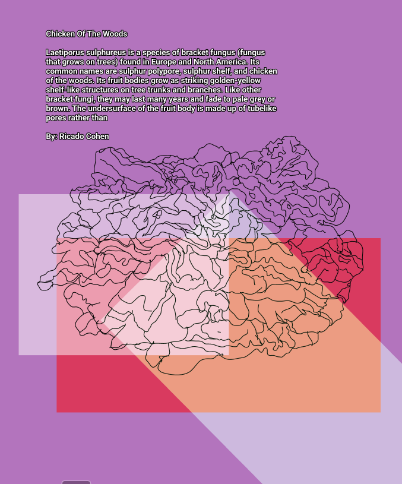

The Vortex Collective was founded by a group of black designers and illustrators seeking to support and invest in black art and black Artists from across the African and Carribean Diaspora.
Our mission is to highlight and celebrate black artists, demystify the art world and make good digital art more accessible to the masses within the NFT space.
Our collective aims to allow black artists to showcase their work on within small online exhibitions. Donations are appreciated and split equally amonst each artist exhibiting their work.
Our first collection is about the importance and beauty of mushrooms. Mushrooms are a rich, low calorie source of fiber, protein, and antioxidants. They break down dead, organic matter and by doing that they release nutrients and those nutrients are then made available for plants to carry on growing.
They may also mitigate the risk of developing serious health conditions, such as Alzheimer's, heart disease, cancer, and diabetes.

Our next step as an organization will be to secure funding so that we can create a decentralized organization or a DAO. By having a DOA we'd be able to set up a living wage fund which black artists can apply to receive finacial support for 6 months of living expenses.